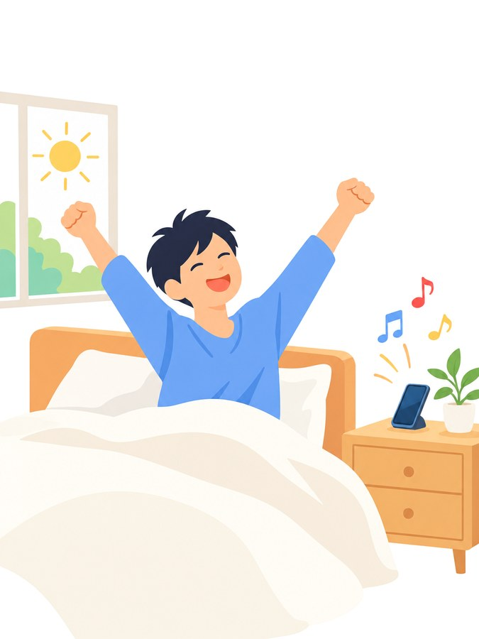
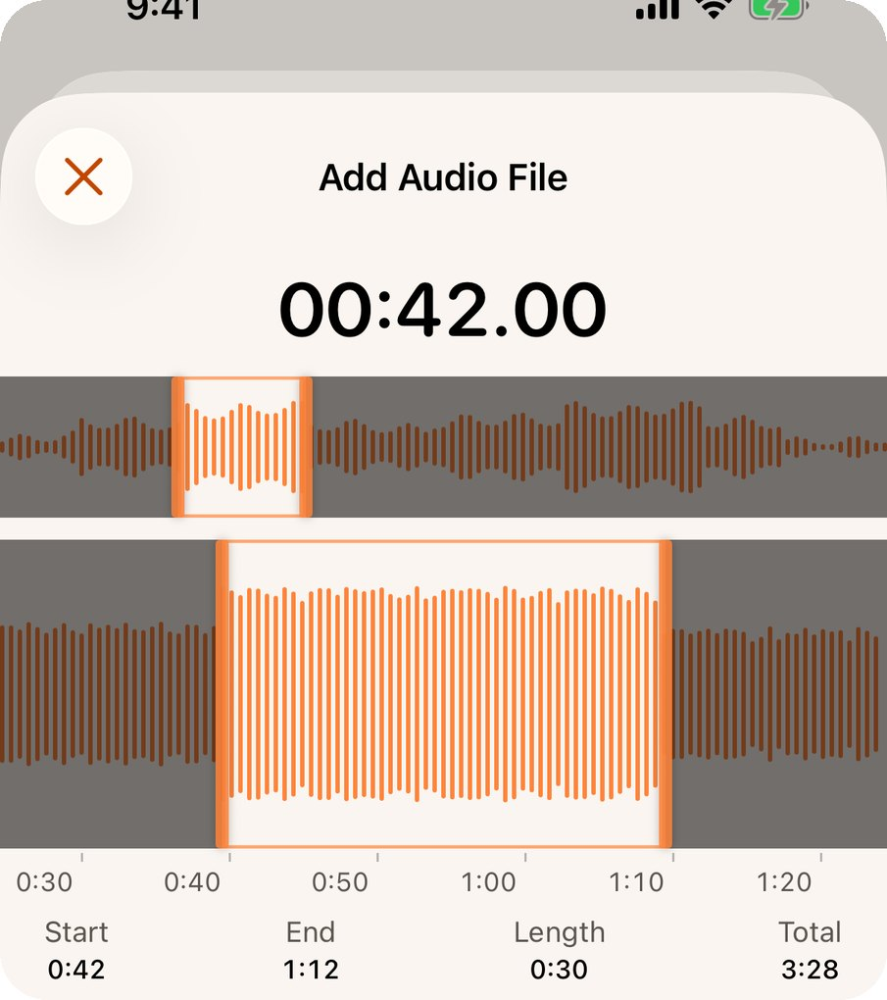
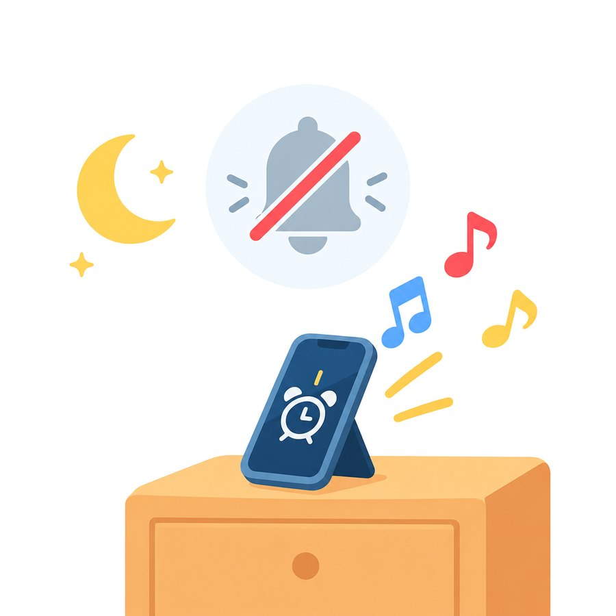
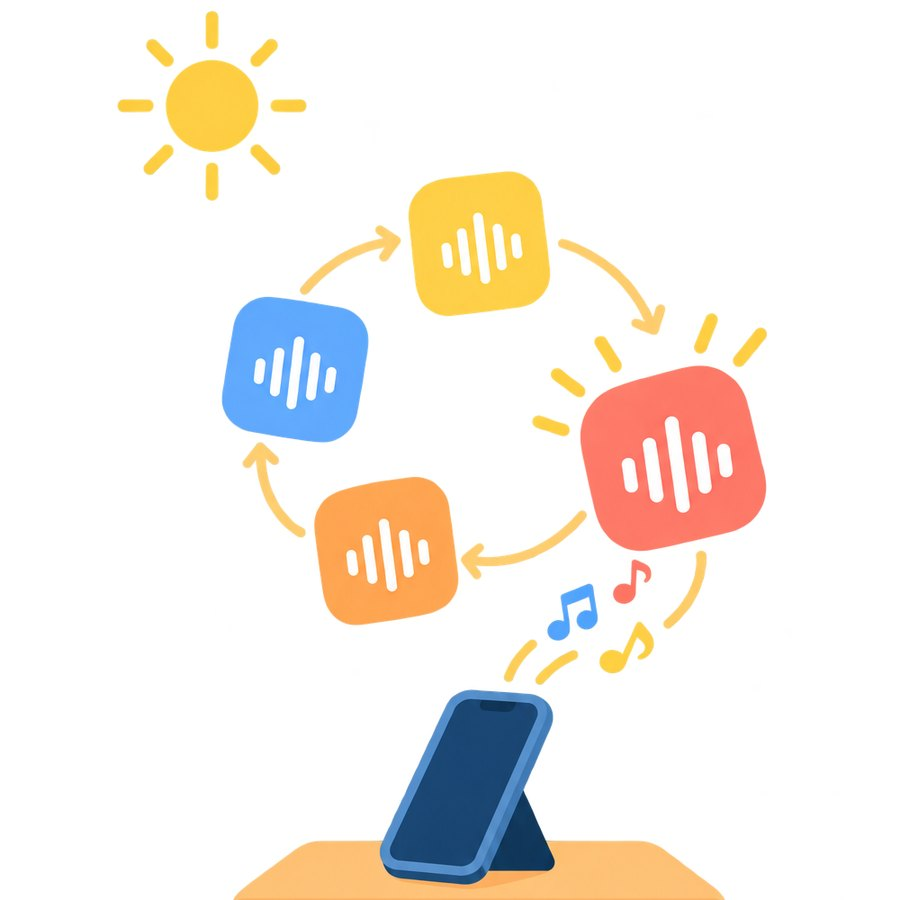
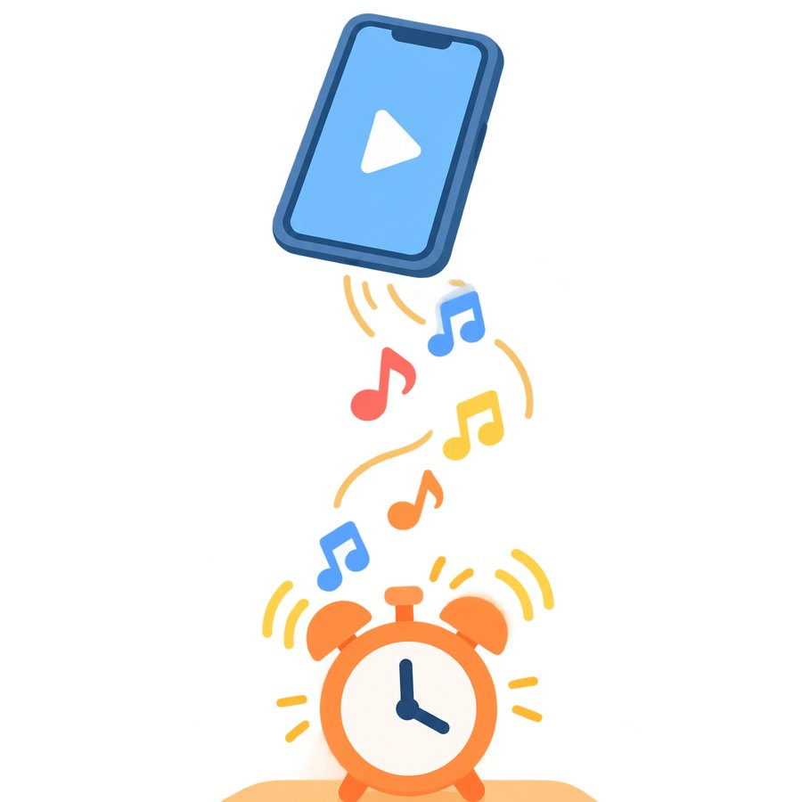

내일 아침은 좋아하는 후렴으로 일어나세요
좋아하는 노래의 원하는 부분이나 동영상 소리로 깨워 주는 iPhone 알람 앱입니다. 고른 부분이 끌 때까지 반복해서 울립니다.

★4.7 · App Store 평가 97개 · 울린 알람 45,000회 이상
무음 모드나 집중 모드가 켜져 있어도 울립니다. iOS 26 이상의 iPhone용.

10/10
My SoundAlarm has been incredibly helpful, and I genuinely appreciate the brilliant minds behind it. It’s impressive to see such a thoughtful and advanced feature implemented on iOS. Customizing alarm sounds has always been surprisingly difficult on iOS, so having a solution like this is truly a game-changer. Thank you to the developers for making something that solves a problem many ios users have struggled with!10/10
My Sound Alarm이 정말 큰 도움이 되었고, 만든 개발자분들의 뛰어난 재능에 진심으로 감사드립니다. iOS에서 이렇게 세심하고 앞선 기능을 볼 수 있다는 게 인상적입니다. iOS에서 알람 소리를 바꾸는 일은 늘 생각보다 어려웠는데, 이런 해결책이 있다는 건 정말 큰 변화입니다. 많은 iOS 사용자가 겪어 온 문제를 해결해 주셔서 감사합니다!
좋아하는 부분이 반복해서 울려요
오디오 파일, 직접 녹음한 목소리, 저장한 동영상을 열고 파형에서 구간을 고르기만 하면 됩니다. 후렴만 잘라도, 한 곡을 통째로 써도 됩니다(동영상은 최대 10분). 끝까지 울리면 처음부터 다시 울립니다.

무음 모드에서도 울림

Apple이 iOS 26에서 만든 알람 시스템(AlarmKit)을 사용해서 무음 모드, 집중 모드, 앱을 닫은 상태에서도 울립니다. 잠금 화면에는 시계 앱처럼 표시됩니다.
좋아하는 후렴이 차례로

내 사운드를 플레이리스트로 묶으면 울릴 때마다 다른 곡으로 일어날 수 있어요. 순서대로, 셔플, 한 곡 랜덤 중에서 고를 수 있습니다. (PRO · 사전 공개)
동영상 소리도 알람으로

사진 보관함이나 파일 앱의 동영상을 열면 소리만 꺼내 알람으로 쓸 수 있어요. 여행 동영상이나 가족·반려동물의 목소리도 쓸 수 있습니다.
App Store 리뷰
App Store에서 23개 국가 및 지역의 평가 97개(2026. 11. 15. 기준).
My Sound Alarm으로 울린 알람은 45,000회 이상. 최근 30일 동안 100개 이상의 국가 및 지역에서 쓰였습니다(2026. 11. 15. 기준).
- ★★★★★
Amazing app great customization
Great customization훌륭한 앱, 뛰어난 사용자 설정
- ★★★★★
Great App, Outstanding Performance (Genuine Review by the user of this App!!!) NOT FAKE OR PAID REW
I can use my custom sound as ringtone instead of paying my assests to Apple for just some selected tones, I genuinely love this App a great salute to the developer, there is no other app this in the App Store this app need some publicity, and once again Thanks to the developer for making such a great App.훌륭한 앱, 뛰어난 성능(이 앱 사용자가 쓴 진짜 리뷰!!! 가짜나 유료 리뷰 아님)
Apple에 돈을 내고 몇 가지 음원을 사는 대신 내 사운드를 벨소리로 쓸 수 있어요. 이 앱이 정말 좋고 개발자분께 큰 박수를 보냅니다. App Store에 이런 앱은 또 없어요. 더 많이 알려질 만합니다. 이렇게 좋은 앱을 만들어 주셔서 다시 한번 감사합니다. - ★★★★☆
気になったところが…
とても使いやすくものすごく便利なのですが１個気になるところが… アラームを全て止めたのにも関わらず鳴ってしまうのはどうしたらいいんでしょうか？やはりそこは不具合なのでしょうか？でしたら改善もお願いしたいです。몇 가지 신경 쓰이는 점이…
사용하기 매우 쉽고 정말 편리한데, 한 가지 걸리는 점이 있어요… 모든 알람을 껐는데도 계속 울립니다. 어떻게 해야 할까요? 버그인가요? 그렇다면 개선해 주시면 좋겠습니다.이 문제는 1.8.1에서 수정되었습니다.
- ★★☆☆☆
Alarmas no programadas
Las alarmas están muy bien, y está muy bien que puedas poner las canciones que quieras, pero a mí de repente me van saltando alarmas a las 00:00 de la mañana y ahora es que no he programado alarmas예약하지 않은 알람
알람은 매우 좋고 원하는 곡을 넣을 수 있는 것도 좋은데, 갑자기 00:00에 알람이 울리기 시작해서 지금은 예약한 알람이 없습니다.이 문제는 1.8.1에서 수정되었습니다.
- ★★★★★
10/10
My SoundAlarm has been incredibly helpful, and I genuinely appreciate the brilliant minds behind it. It’s impressive to see such a thoughtful and advanced feature implemented on iOS. Customizing alarm sounds has always been surprisingly difficult on iOS, so having a solution like this is truly a game-changer. Thank you to the developers for making something that solves a problem many ios users have struggled with!10/10
My Sound Alarm이 정말 큰 도움이 되었고, 만든 개발자분들의 뛰어난 재능에 진심으로 감사드립니다. iOS에서 이렇게 세심하고 앞선 기능을 볼 수 있다는 게 인상적입니다. iOS에서 알람 소리를 바꾸는 일은 늘 생각보다 어려웠는데, 이런 해결책이 있다는 건 정말 큰 변화입니다. 많은 iOS 사용자가 겪어 온 문제를 해결해 주셔서 감사합니다! - ★★★★★
넘 조아여
안녕하세요!
갠적으로 전 하투하를 좋아하는데,,💫
아이폰 알람에서는 노래 길이가
짧게만 알람설정이 가능하더라구요.
그래서 찾아보다 이 앱을 찾았어요!
여기서는 폰을 잘 못쓰는 저 조차도
영상촬영을 해서 너무나도 쉽게
알람을 정할 수 있어요!! 🎀🎀
내 최애 노래를 들으며 일어나니깐
좋은게 한둘이 아니네요,, 😌 - ★★★★★
This app is the goat.
It contains what i really wanted, thank you for creating this app.최고의 앱. 정말 원하던 기능이 들어 있어요. 만들어 주셔서 감사합니다.
- ★★★☆☆
Enlever les vibrations
Super application qui fonctionne très bien, même en mode avion, ne pas déranger etc Seul bémol il est impossible depuis l’application d’enlever les vibrations ou de les modifier아주 잘 작동하는 좋은 앱이에요. 비행기 모드나 방해 금지 모드에서도 울려요. 유일한 아쉬움은 앱에서 진동을 끄거나 바꿀 수 없다는 점이에요.
- ★★★★★
Simply what I want for an alarm clock
알람 시계에 바라던 바로 그것
지금까지 작성된 모든 리뷰를 원문 그대로 싣습니다(1건은 제목만). 번역은 저희가 했습니다.
자주 묻는 질문
iPhone에서 노래를 알람으로 설정하려면?
iPhone 기본 시계 앱에서도 보관함의 노래를 고를 수 있지만 항상 처음부터 울립니다. My Sound Alarm에서는 오디오 파일(MP3, AAC, WAV, M4A)이나 동영상을 열고, 파형에서 원하는 부분을 골라 알람 소리로 저장할 수 있습니다.
Apple Music이나 Spotify의 노래를 쓸 수 있나요?
아니요. 스트리밍 서비스의 노래는 보호되어 있어 가져올 수 없습니다. 파일 앱에 저장한 오디오 파일, 직접 녹음한 목소리, 사진 보관함의 동영상을 쓸 수 있습니다.
동영상 소리도 알람으로 쓸 수 있나요?
네. 사진 보관함이나 파일 앱에서 동영상을 고르면 소리를 추출합니다. 어느 부분을 울릴지도 고를 수 있습니다.
GarageBand으로 만든 벨소리처럼 30초 제한이 있나요?
없습니다. GarageBand으로 만든 벨소리는 30초까지지만, My Sound Alarm은 동영상에서 최대 10분, 긴 오디오 파일도 그대로 가져올 수 있습니다. 후렴만 잘라 쓸 수도, 한 곡을 통째로 쓸 수도 있습니다.
무음 모드, 집중 모드, 앱을 닫았을 때도 울리나요?
My Sound Alarm을 처음 열 때 나오는 알람 허용을 켜 두면 울립니다. Apple의 AlarmKit으로 알람을 등록하므로 앱이 실행 중이지 않아도 됩니다.
알람 소리를 크게 하려면?
My Sound Alarm의 알람 음량도 시계 앱과 똑같이 설정 > 사운드 및 햅틱 > 벨소리 및 알림을 따릅니다. ‘버튼으로 변경’을 켜면 음량 버튼으로도 바꿀 수 있습니다. 제어 센터의 음량은 음악과 동영상용이라 알람 음량은 바뀌지 않습니다.
좋아하는 노래의 좋아하는 부분으로 일어나기